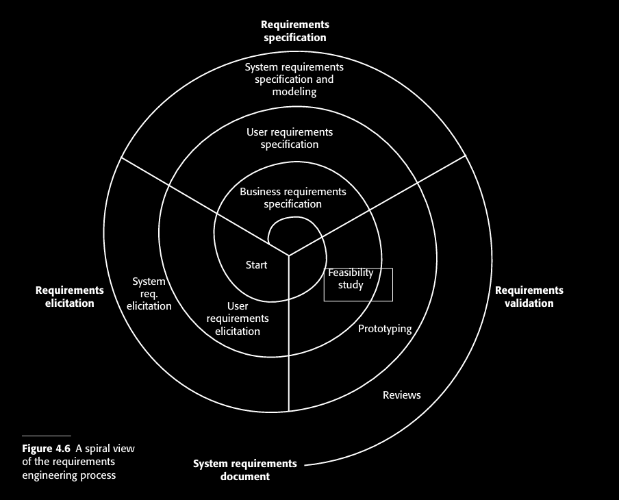
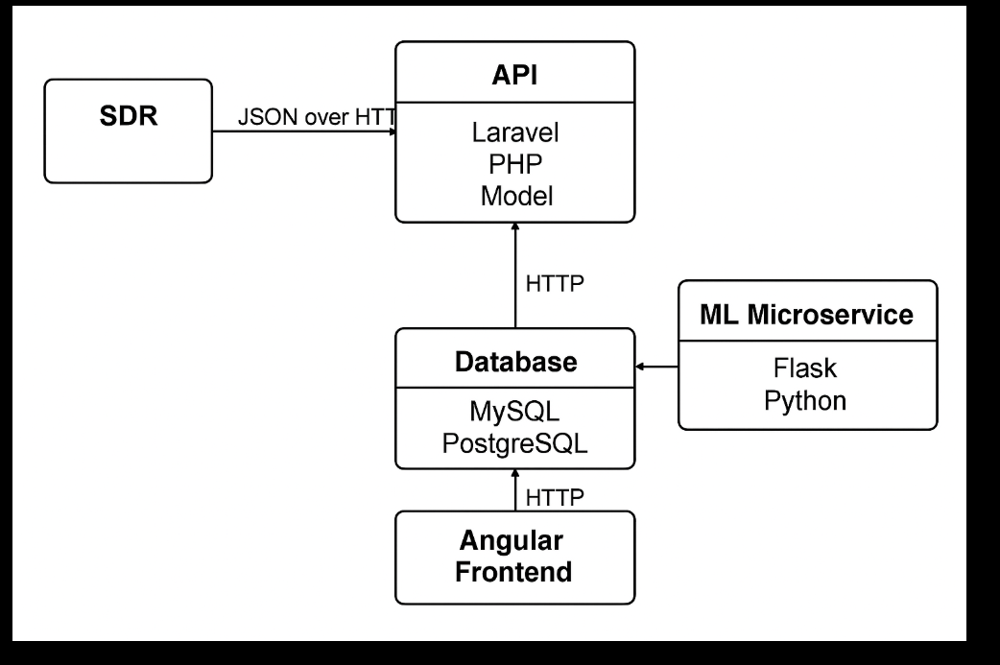
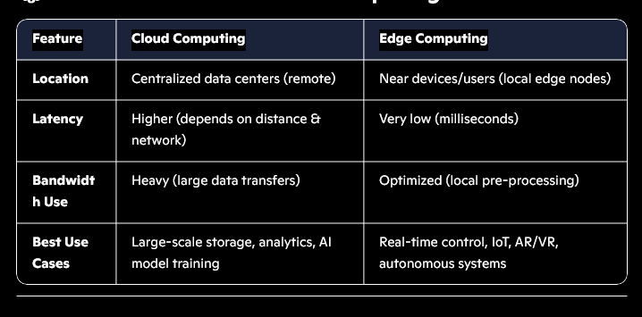
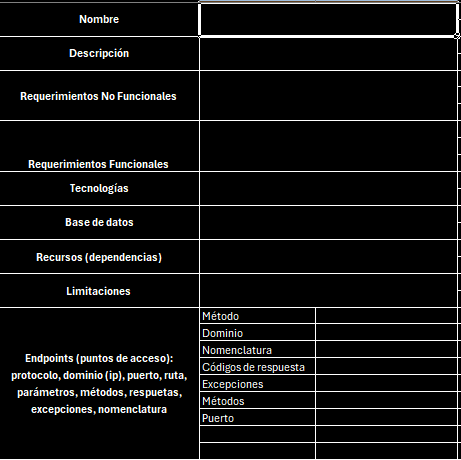
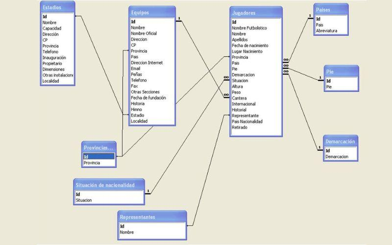

I
Project Vision & Strategic Objectives
This project aims to deliver a high-performance, distributed API system for the Software Defined Radio (SDR) monitoring network across Colombia. By leveraging Edge Computing, Event-Driven Microservices, and Machine Learning, the system provides real-time signal intelligence, automated anomaly detection, and massive-scale spectral data analysis.
1. Requirements Engineering (RE)
Inspired by Sommerville's Software Engineering principles.
1.1 Stakeholder Analysis
- National Spectrum Agency (ANE): Primary client for spectrum regulation and monitoring.
- Field Engineers: Operators of distributed SDR nodes.
- Signal Analysts: Users of the dashboard and automated alerting system.
- Security Teams: Monitors for unauthorized frequency occupation and anomalies.
1.2 Functional Requirements (FR)
- FR-01: Real-time Data Ingestion: System must ingest spectral samples from >100 distributed nodes simultaneously.
- FR-02: Signal Detection: Identify peaks and anomalies within predefined frequency ranges.
- FR-03: Automated Alerting: Dispatch notifications via SMS/Email when unauthorized activity is detected.
- FR-04: ML Preprocessing: Use unsupervised learning for noise reduction and supervised models for pattern matching.
1.3 Non-Functional Requirements (NFR)
- Latency: Detection-to-alert latency must be $< 2$ seconds.
- Scalability: Horizontal scaling of ingestion and detection services.
- Retention: Raw data retention for 6 months; metadata/detections stored indefinitely.
- Throughput: Capable of handling millions of samples per second via partitioning.

Referenced External Requirements:../../content/APIrequirements/detailed_reqs.png
2. System Architecture
We adopt a multi-tier Conceptual → Logical → Physical design approach to ensure separation of concerns and system maintainability.
2.1 Conceptual Design (High-Level Intelligence)
The system acts as a distributed nervous system for RF spectrum monitoring.
- SDR Nodes (The Sensors): Capture raw RF signals and perform initial processing.
- The Core (API & Microservices): Orchestrates data flow, storage, and intelligence.
- The Edge (Processing Layer): Pure C implementation on Raspberry Pi/Edge devices to minimize backhaul bandwidth.
2.2 Logical Design (Formal Component Model)
An Event-Driven Microservices Architecture ensures the system remains decoupled and highly available.
- Ingestion Pipeline: SDR → Edge Processing (FFT) → MQTT/Kafka Broker → Storage Service.
- Parallel Intelligence Branch: Message Broker → ML Detection Service → Alert Service.
- API Gateway: Centralized entry point for Client Applications (Angular Dashboard).

3. Core Technical Components
3.1 Edge Computing & Processing (SDR Agent)
To optimize performance, the Fast Fourier Transform (FFT) and initial filtering are performed at the edge using Pure C on Raspberry Pi devices. This reduces the data footprint by sending processed spectrum samples rather than raw IQ data.
- Protocol: TCP/UDP for raw streams; JSON/UDC for processed metadata.
- Buffering: Local ring-buffers to prevent data loss during network jitter.

3.2 Microservices Ecosystem
| Service | Responsibility | Tech Stack |
|---|---|---|
| Ingestion | Stream processing and schema validation | Node.js / FastAPI |
| ML Detection | Anomaly detection & Signal ID | Python (Scikit-learn, PyTorch) |
| Alerting | Multi-channel notification dispatch | Node.js (RabbitMQ/Kafka) |
| Admin | Node management & RBAC | NestJS |
| Monitoring | System health & Pipeline telemetry | Prometheus / Grafana |

3.3 Data Strategy & Persistence
The system utilizes PostgreSQL with time-series partitioning to handle massive datasets efficiently.
- Partitioning Strategy: Monthly tables (e.g.,
measurements_2026_05) to maintain index performance. - Indexing: BRIN (Block Range Index) for time-series and B-Tree for metadata.
- Storage: Metadata in Relational DB; Raw high-frequency samples in specialized Time-Series DB (TSDB) or Object Storage (S3).

4. Professional Implementation & Deployment
4.1 Development Lifecycle
We follow an Agile/SCRUM methodology with CI/CD integration.
- Environment: WSL2, Docker, Kubernetes.
- Backend: Node.js (Express/NestJS) for the REST API; Python for ML.
- Frontend: Angular for the Real-time Dashboard (WebSockets).
4.2 CI/CD Pipeline
- Continuous Integration: Automated unit testing (Jest/Mocha) and linting.
- Continuous Deployment: Dockerized containers deployed to a staging/production cluster via GitHub Actions.
4.3 Observability & Security
- Security: OAuth2/JWT for authentication; TLS for data in transit; Rate limiting at the Gateway.
- Observability: Centralized logging (ELK Stack) and real-time metrics (Prometheus).
5. Deployment Roadmap
- Infrastructure Setup: Provisioning DB, Message Broker (Kafka), and Registry.
- Database Implementation: Schema creation, partitioning logic, and indexing.
- API Implementation: Developing core endpoints and UDC (Universal Data Communication) validation.
- ML Integration: Model training with historical spectral data and microservice deployment.
- Frontend Delivery: Interactive map-based dashboard and spectral visualization.
6. Validation & Finalization
The project is considered production-ready when:
- Load Testing: System sustains >10,000 requests/sec with <500ms latency.
- **Detection Accuracy:** ML models achieve >95% precision in signal identification.
- Resilience: Successful failover test for the database and message broker.
- Deployment: Full containerized deployment across the monitoring network.

Created by the ANE Engineering Team. Expert Design & Professional Implementation.